Long Cheng ↗
Professor
School of Artificial Intelligence, University of Chinese Academy of Sciences
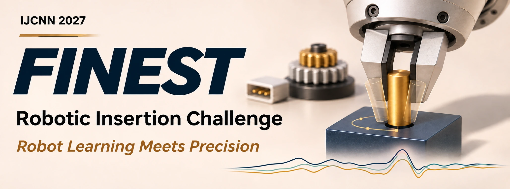
FINEST Robotic Insertion Challenge
Robot Learning Meets Precision
Generalist robot policies and vision-language-action models are extending learned control across tasks, objects and environments. Precision assembly poses a demanding test of these capabilities: small alignment errors can block insertion, and changing contacts require correction and recovery throughout execution.
The FINEST Challenge on Robust Submillimeter Robotic Insertion examines precision and generalization across assembly conditions. It compares VLA and imitation-learning policies, classical assembly strategies and hybrid approaches on a shared task suite, evaluating whether they maintain submillimeter assembly success as clearances tighten and initial poses and friction vary.
The competition is conducted entirely in simulation. Episodes begin with the part securely grasped above its target and focus on alignment, contact and insertion. Researchers and student teams can participate without access to a physical robot.
All teams are evaluated on the same ten insertion tasks. The five peg-in-hole tasks use three official per-side clearances; the other five retain their task-specific assembly geometry.
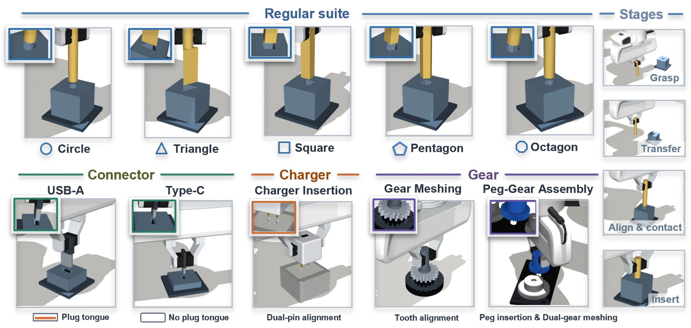
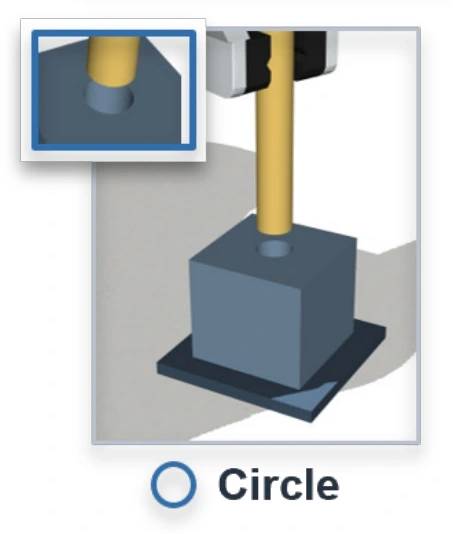
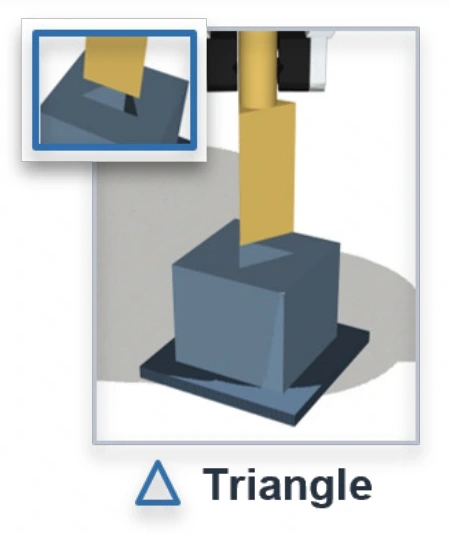
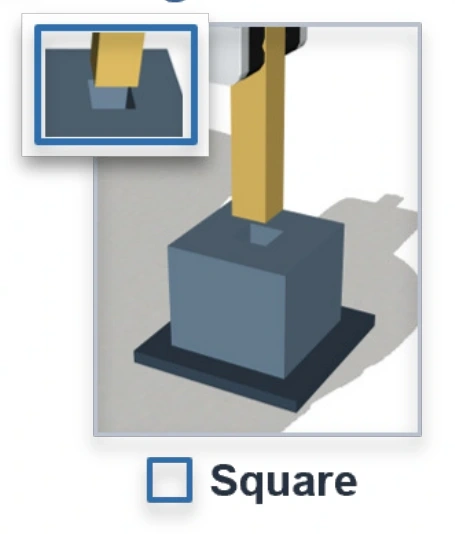
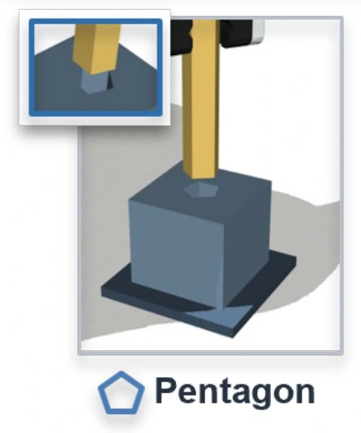
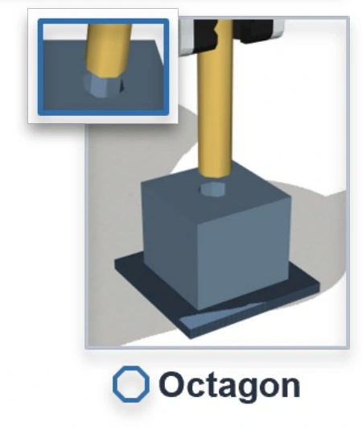
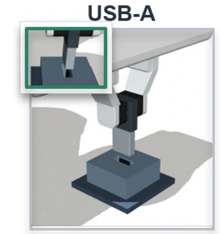
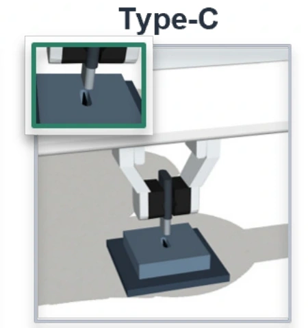
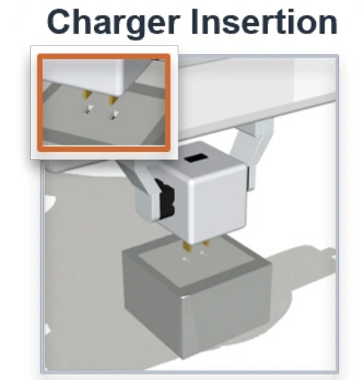
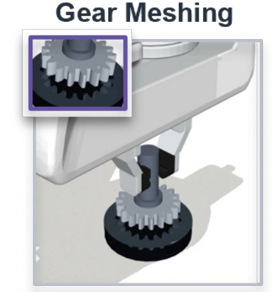
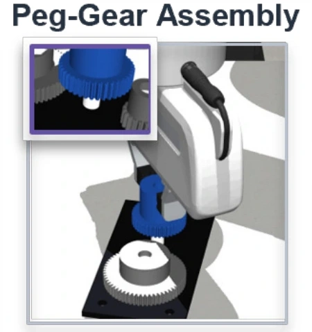
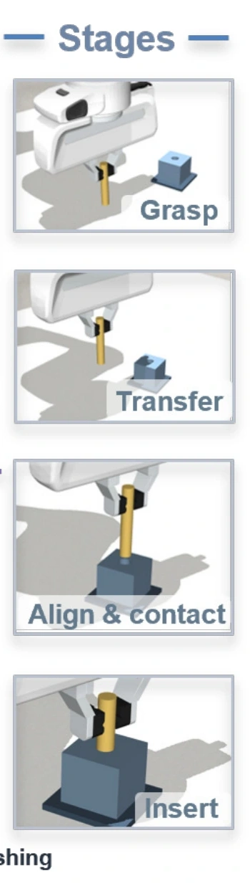
| Suite | Tasks | Official main evaluation |
|---|---|---|
| Peg-in-Hole | Circle, Triangle, Square, Pentagon, Octagon | 0.5, 0.1 and 0.05 mm per-side clearance for each task |
| Connector | Type-C, USB-A | Fixed task-specific assembly geometry |
| Charger | Charger Insertion | Fixed task-specific assembly geometry |
| Gear | Gear Meshing, Peg-Gear Assembly | Fixed task-specific assembly geometry |
A separate 0.01 mm extreme-precision evaluation is reported for exploration. It does not affect the overall score, tie-breaking or official ranking.
Illustrative simulation rollouts from the FINEST benchmark.
Initial poses and friction vary within published ranges. The final evaluation instances and random seeds remain private. Teams may generate training data across the published ranges; the hidden test measures robustness to held-out instances rather than guaranteeing that every test condition lies outside a team’s training distribution.
The starter resources will include 7,500 successful trajectories generated by task-specific reinforcement-learning experts, together with environments, assets and collection metadata. Public training and development manifests are separated from the private final-test manifest.
The demonstrations cover direct insertion and exploratory contact correction. Teams may also generate their own simulation data or use external data and pretrained models, with source, version, license and resource declarations.
Action-chunking transformer baseline.
Diffusion-based visuomotor baseline.
Pretrained VLA fine-tuned for insertion.
Contact-aware policy adapted to the common wrist F/T interface.
Reactive diffusion policy adapted to the common wrist F/T interface.
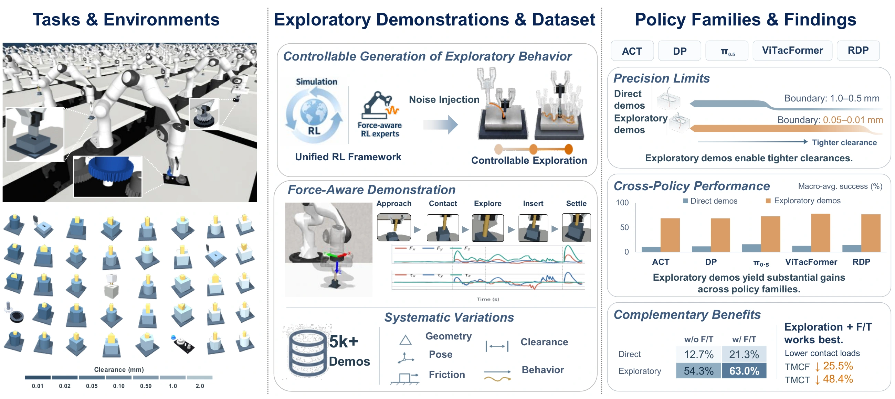
The release package will include checkpoints, training configurations, inference adapters and example submissions for all five baselines, together with local evaluation scripts.
The overall score is the average of ten task scores, scaled to 100. Each task contributes at most 10 points. Peg-in-hole scores emphasize tighter clearances through fixed weights of 20%, 30% and 50%.
Success is weighted by precision: 20% at 0.5 mm, 30% at 0.1 mm and 50% at 0.05 mm for each peg-in-hole task. The other five tasks use their success rates directly.
Force and torque are policy inputs. They do not contribute to ranking.
Read the rules, install the released environment and inspect the training data and baseline examples.
Develop a policy with the permitted training resources and test it using the local evaluator.
Submit one system for each scheduled development round and review the reference leaderboard.
Submit inference code, weights and supporting documentation by the final deadline. The organizers run hidden evaluation and verify leading solutions.
Prepare inference code, model weights, an environment specification and a method report.
One system per development round; one frozen final system. Submission requirements ↗
Tentative Development rounds are organizer-proposed; conference milestones follow the IJCNN 2027 competition call.
| Milestone | Date | Schedule |
|---|---|---|
| Public launch | IJCNN | |
| Development evaluation 1 | Organizers | |
| Development evaluation 2 | Organizers | |
| Final system submission | IJCNN | |
| Final ranking and verification | IJCNN |
| Milestone | Date | Schedule |
|---|---|---|
| Competition paper submission | IJCNN | |
| Paper acceptance notification | IJCNN | |
| Camera-ready upload and registration | IJCNN | |
| Conference competition days | IJCNN |
The top three teams receive award certificates. All other ranked teams receive participation certificates.
Subject to conference policy and peer review, up to three leading teams may be invited to submit competition papers for possible inclusion in the IJCNN 2027 proceedings.
Professor
School of Artificial Intelligence, University of Chinese Academy of Sciences
Assistant Professor
Zhongguancun Academy
Associate Professor
Department of Automation, Tsinghua University
Director of Sensor BU and Advanced Research Institute
PaXini
Ph.D. Student
Institute of Automation, Chinese Academy of Sciences; jointly trained at Zhongguancun Academy
Ph.D. Student
University of Chinese Academy of Sciences and Institute of Automation, Chinese Academy of Sciences
Ph.D. Student
Institute of Automation, Chinese Academy of Sciences
Ph.D. Student
Tianjin University
Pengwei Zhang · zhangpengwei2024@ia.ac.cn
For questions about participation, resources and evaluation, contact the organizing team. Shared clarifications will be added to the FAQ and public issue tracker.
No. All competition evaluation is conducted in simulation.
Read the related rule ↗Classical assembly strategies, imitation learning, reinforcement learning and hybrid methods are welcome through the same interface. External data, pretrained models and self-generated simulation data are allowed with the required disclosures.
Read the related rule ↗Yes, during training. At evaluation time, the submitted policy must use only the prescribed observations.
Read the related rule ↗Yes. Task-specific policies and unified multi-task policies are both eligible. Submit them as one system for each allowed submission.
Read the related rule ↗No. Wrist force and torque are available as policy inputs. Ranking is based on assembly success.
Read the related rule ↗No. It is reported separately and never enters the score or tie-breaking procedure.
Read the related rule ↗No. Independent hidden evaluation of the frozen final system determines the official ranking.
Read the related rule ↗One system per development round and one frozen final system.
Read the related rule ↗The affected episodes count as failures and remain in the denominator. Infrastructure failures are rerun using the original instances and frozen system.
Read the related rule ↗Release links will be added to the resource section. The frozen evaluation configuration will be published before launch.
Read the related rule ↗